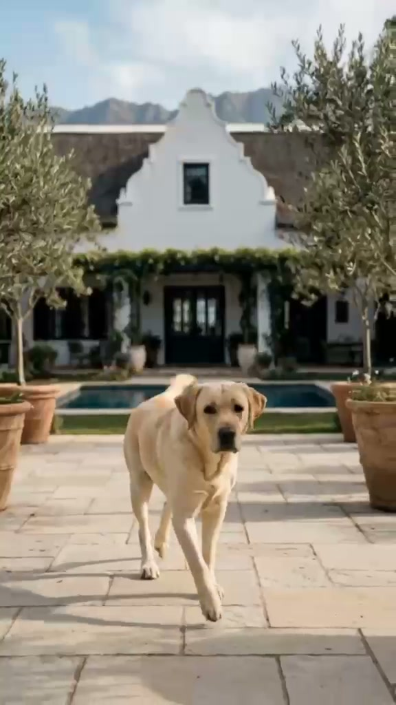

SA
Sew & leather
Robes, coats, collars, leads, pouches and bed covers from Cape and Gauteng makers who already understand short runs.
dry&co starts where Charne’s film left us — cream knit, yellow Labrador, navy shutters, olive trees and a leather patch that says the name quietly.

South Africa’s higher-end dog owners already buy beautiful homes, cars and weekends away. Their dogs still end up with neon nylon and plastic bowls that fight the room.
dry&co closes that gap. We make the after-swim robe, the leather lead that matches a tote, the check blanket that earns a place on the sofa — and we stamp it with the DRY & CO. mark from Charne’s launch identity.
The name is the product promise: get them dry, keep them refined, build a company around the pieces that actually turn over.
Robes, coats, collars, leads, pouches and bed covers from Cape and Gauteng makers who already understand short runs.
Ceramic bowls and oak feeders from local studios — high perceived value, controllable MOQs.
Check blankets and microfibre cores imported where quality-per-rand wins, then finished and patched in SA.
Dry shampoo and calm mist filled locally into apothecary packaging — fast SKUs for markets and gift sets.
On product: a tan leather patch, stitched clean, with DRY & CO. in refined capitals.
On film and dark moments: the same name in luminous serif white against deep navy — the end-card from Charne’s video.
Both live on this site. The patch sells the goods. The wordmark sells the brand.
Shop the launch edit